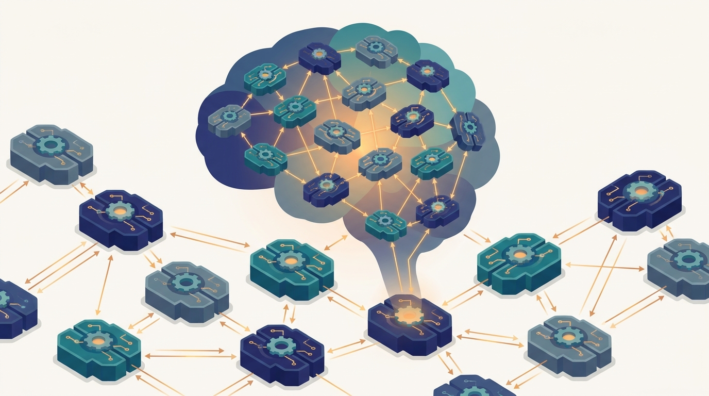

"I solved my part of the problem perfectly and on time. The trouble was that three other agents solved their parts perfectly too, and none of our perfect parts fit together. We have since learned to talk before we act."
An Agent That Optimized Locally and Regretted It Globally
This is the chapter where the book distributes its sixth and final axis, intelligence itself, by replacing the single decision-maker with a society of autonomous agents that each perceive, reason, and act, and must coordinate to solve problems no one of them could solve alone. The popular picture of multi-agent AI is brand new: large language models wrapped as agents, handing tasks to one another, debating, and orchestrating tools. The conceptual machinery underneath it is forty years old. Distributed Artificial Intelligence worked out, long before deep learning, how a set of separately situated reasoners decomposes a shared problem, how they post partial results to a common workspace and refine them opportunistically, how they bid for tasks and form contracts, how they optimize a global objective that is split across them as local constraints, how they reach agreement without a central authority, and how to reason formally about what each one knows and what they all know in common. Every one of those ideas is load-bearing in modern agentic systems: a blackboard is a shared scratchpad, the Contract-Net Protocol is task delegation by bidding, distributed constraint optimization is the math of decentralized scheduling and resource allocation, and the logic of distributed knowledge and common knowledge is exactly what an agent needs to reason about before it can rely on a peer. The distribution is the point, and here it reaches its sharpest form: the distributed pieces are no longer parts of one mind but minds of their own, with their own information, their own goals, and the standing possibility of disagreement. This chapter is the general theory of getting such minds to act together, and it is the foundation on which the rest of Part VI, game theory, multi-agent systems, multi-agent reinforcement learning, swarms, and orchestration, is built.
Chapter Overview
This chapter opens Part VI by taking the distribution thesis that has run through the whole book and applying it to the one thing the earlier parts always kept centralized: the decision-maker. Up to now, however widely a computation was spread, it served a single agent that owned the goal and made the call. Distributed Artificial Intelligence drops that assumption. It studies systems of multiple autonomous agents, each with partial information, local goals, and the power to act, and asks how they can be made to solve a shared problem together. The nine sections build the classical theory of that question and then connect it forward to the agentic systems engineers ship today, so that the field's modern vocabulary rests on the foundations that produced it rather than floating free of them.
The sections fall into three movements. The first sets the stage and the architecture: Section 27.1 traces the history of the field, Section 27.2 frames distributed problem solving as cooperative decomposition of a shared task, and Section 27.3 lays out the architectural spectrum from centralized to decentralized to hybrid AI. The second movement develops the classical coordination mechanisms: Section 27.4 builds blackboard systems, Section 27.5 develops the Contract-Net Protocol, and Section 27.6 formalizes distributed constraint optimization. The third movement turns to the harder questions of acting together and reasoning about one another: Section 27.7 develops coordination and cooperation, Section 27.8 builds the logic of distributed knowledge and belief, and Section 27.9 closes by showing how all of this machinery reappears in modern AI systems.
Read in order, the nine sections take you from "multi-agent AI is a recent invention of the LLM era" to a working mental model of a much older and deeper field: a set of autonomous agents decomposes a problem, shares partial results through a common structure, allocates tasks by contracting, optimizes a global objective split into local constraints, coordinates its actions and cooperates toward shared goals, reasons explicitly about what each agent knows and what they know in common, and, in its modern form, becomes the agent swarms and orchestration pipelines built on top of language models. The argument is cumulative and it opens Part VI's arc: the serving and operational infrastructure of Part V becomes the substrate on which these agents run, and the classical DAI mechanisms developed here become the protocols that the game theory of Chapter 28 and the multi-agent systems of Chapter 29 formalize and extend.
Prerequisites
This chapter assumes the distributed-systems foundations of Part I, and most directly the concepts chapter. From Chapter 2: Distributed Systems Concepts for AI you carry the vocabulary that distributed AI is built on: partial information and the absence of a global clock, message passing as the only way separated processes learn anything about one another, the difference between centralized and decentralized control, and the impossibility results that bound what agreement is even achievable when communication can fail. Those ideas, originally framed for processes and replicas, return here promoted to agents that not only compute but decide, so that coordination, contracting, and common knowledge become the agent-level versions of the consistency and consensus problems Chapter 2 introduced. Beyond Chapter 2 the chapter assumes comfortable reading of pseudocode and light formal notation, a working picture of optimization and constraint satisfaction for Section 27.6, and the general distributed-systems intuition the whole book has been building. No prior exposure to agent theory, game theory, or formal logic is required; Section 27.1 builds the field from its origins, and each mechanism is developed from first principles before it is connected to the modern systems that use it.
Learning Objectives
- Trace the history of Distributed Artificial Intelligence and explain how the unit of distribution shifts from a shard of one program to an autonomous agent that perceives, reasons, decides, and acts.
- Frame distributed problem solving as the cooperative decomposition of a shared task across agents with partial information and local goals.
- Distinguish centralized, decentralized, and hybrid AI architectures, and reason about the coordination, robustness, and scalability tradeoffs each one makes.
- Explain how a blackboard system lets independent knowledge sources contribute opportunistically to a shared solution structure, and relate it to the modern shared-scratchpad pattern.
- Develop the Contract-Net Protocol as task allocation by announcement, bidding, and award, and recognize it as the ancestor of agentic task delegation.
- Formalize distributed constraint optimization, and connect algorithms such as ADOPT, DPOP, and Max-Sum to decentralized scheduling and resource allocation.
- Reason about coordination and cooperation among self-interested or jointly committed agents, including the role of joint intentions and teamwork.
- Apply the logic of distributed knowledge, belief, and common knowledge to determine what an agent must know before it can rely on a peer.
- Connect classical DAI mechanisms to modern AI systems, recognizing blackboards, contract nets, and distributed coordination inside today's LLM agent swarms and orchestration pipelines.
If you keep one thing from this chapter, keep this: Distributed Artificial Intelligence distributes the last axis, intelligence itself, by replacing the single decision-maker with a society of autonomous agents, and it supplies the classical machinery, distributed problem solving, blackboards, the Contract-Net Protocol, distributed constraint optimization, coordination and cooperation, and the logic of distributed knowledge, that modern multi-agent and agentic AI systems still run on. Read forward, the sections build that machinery in the order a multi-agent system needs it: first the history and the framing of distributed problem solving, then the architectural spectrum, then the three classical coordination mechanisms of blackboards, contract nets, and distributed constraint optimization, then the broader questions of coordination and cooperation and of reasoning about what each agent knows, and finally the reappearance of all of it in modern AI. Read as a question, the chapter asks of any system of more than one decision-maker: where did this field come from, how is a shared problem split across agents, where does control live, how do agents pool partial results, how do they hand work to one another, how do they optimize a global goal made of local constraints, how do they act together, what must each agent know about the others, and how do these forty-year-old answers show up in the agent systems we build today. The roadmap below walks the nine sections that answer it, and the last one carries the thread straight into the agentic present.
Chapter Roadmap
- 27.1 History of Distributed Artificial Intelligence Traces DAI from its 1980s origins through the decades that produced distributed problem solving and multi-agent systems, establishing how the unit of distribution became the autonomous agent.
- 27.2 Distributed Problem Solving Frames the core DAI problem as cooperative decomposition of a shared task across agents that each hold partial information and pursue local goals while contributing to one global solution.
- 27.3 Centralized, Decentralized, and Hybrid AI Lays out the architectural spectrum of where control and knowledge live, and reasons about the coordination, robustness, and scalability tradeoffs each arrangement makes.
- 27.4 Blackboard Systems Builds the blackboard architecture in which independent knowledge sources contribute opportunistically to a shared solution structure, the ancestor of the modern shared-scratchpad pattern.
- 27.5 The Contract-Net Protocol Develops task allocation by announcement, bidding, and award, the classical market mechanism that prefigures agentic task delegation and tool dispatch.
- 27.6 Distributed Constraint Optimization Formalizes optimizing a global objective split into local constraints across agents, connecting ADOPT, DPOP, and Max-Sum to decentralized scheduling and resource allocation.
- 27.7 Coordination and Cooperation Examines how agents align their actions and pursue shared goals, developing joint intentions, commitments, and teamwork as the glue that turns separate agents into a working group.
- 27.8 Distributed Knowledge and Belief Builds the logic of what agents know and believe, including distributed knowledge and common knowledge, and shows what an agent must establish before it can rely on a peer.
- 27.9 DAI in Modern AI Systems Closes the chapter by tracing every classical mechanism, blackboards, contract nets, and distributed coordination, into today's LLM agent swarms and orchestration pipelines.
Read the nine sections in order and you will hold a working model of distributed intelligence as a field with deep roots: Section 27.1 traces its history, Section 27.2 frames distributed problem solving, Section 27.3 maps the centralized-to-decentralized spectrum, Section 27.4 builds blackboard systems, Section 27.5 develops the Contract-Net Protocol, Section 27.6 formalizes distributed constraint optimization, Section 27.7 develops coordination and cooperation, Section 27.8 builds the logic of distributed knowledge and belief, and Section 27.9 connects all of it to modern AI. The thread to watch is the agent as the new unit of distribution: the serving fleet of Chapter 26 becomes the infrastructure these agents run on, and the classical mechanisms built here become the protocols that Chapter 28 and the chapters after it formalize and extend.
What's Next?
This chapter opened Part VI by distributing the last axis, intelligence itself, and laid down the classical foundations of the field: distributed problem solving, the architectural spectrum, blackboards, contract nets, distributed constraint optimization, coordination and cooperation, the logic of distributed knowledge, and the reappearance of all of it in modern agentic systems. What it has not yet done is give the agents a theory of one another. DAI mostly assumed cooperation: the agents want the shared problem solved. But autonomous agents can have goals that conflict, and an agent that reasons about peers must reason about peers who are reasoning about it in return. Chapter 28: Game-Theoretic Foundations for Multi-Agent AI supplies that theory. It develops the mathematics of strategic interaction, payoffs, best responses, equilibria, and mechanism design, that tells you what self-interested agents will actually do, and when cooperation is a stable outcome rather than a hopeful assumption. Where this chapter built the protocols by which agents coordinate, the next builds the analysis of whether they will choose to. Read it next, and watch coordination become a question with a strategic answer.
Bibliography & Further Reading
Foundations of Distributed Problem Solving
Smith, R. G. "The Contract Net Protocol: High-Level Communication and Control in a Distributed Problem Solver." IEEE Transactions on Computers, C-29(12), 1980. ieeexplore.ieee.org
The paper that introduced task allocation by announcement, bidding, and award, the market mechanism that grounds Section 27.5 and prefigures modern agentic task delegation.
Erman, L. D., Hayes-Roth, F., Lesser, V. R., Reddy, D. R. "The Hearsay-II Speech-Understanding System: Integrating Knowledge to Resolve Uncertainty." ACM Computing Surveys, 12(2), 1980. dl.acm.org
The system that established the blackboard architecture, with independent knowledge sources contributing opportunistically to a shared solution, the canonical reference for Section 27.4.
Durfee, E. H., Lesser, V. R., Corkill, D. D. "Trends in Cooperative Distributed Problem Solving." IEEE Transactions on Knowledge and Data Engineering, 1(1), 1989. ieeexplore.ieee.org
A survey that consolidated the cooperative-distributed-problem-solving paradigm and its coordination concerns, the framing reference for Sections 27.1, 27.2, and 27.7.
Distributed Constraint Optimization
Modi, P. J., Shen, W.-M., Tambe, M., Yokoo, M. "ADOPT: Asynchronous Distributed Constraint Optimization with Quality Guarantees." Artificial Intelligence, 161(1-2), 2005. sciencedirect.com
The asynchronous DCOP algorithm with bounded-error guarantees that anchors the optimization theory of Section 27.6.
Petcu, A., Faltings, B. "DPOP: A Scalable Method for Multiagent Constraint Optimization." Proceedings of the 19th International Joint Conference on Artificial Intelligence (IJCAI), 2005. ijcai.org
A dynamic-programming DCOP method that trades message count for message size, the complement to ADOPT discussed in Section 27.6.
Farinelli, A., Rogers, A., Petcu, A., Jennings, N. R. "Decentralised Coordination of Low-Power Embedded Devices Using the Max-Sum Algorithm." Proceedings of the 7th International Conference on Autonomous Agents and Multiagent Systems (AAMAS), 2008. dl.acm.org
The Max-Sum message-passing approach to decentralized coordination over resource-constrained agents, the third DCOP method developed in Section 27.6.
Cooperation, Knowledge, and Belief
Cohen, P. R., Levesque, H. J. "Teamwork." Noûs, 25(4), 1991. jstor.org
The joint-intention account of how agents form and maintain shared commitments, the theoretical basis for the teamwork material in Section 27.7.
Halpern, J. Y., Moses, Y. "Knowledge and Common Knowledge in a Distributed Environment." Journal of the ACM, 37(3), 1990. dl.acm.org
The formal treatment of distributed knowledge and common knowledge among processes, the logical foundation for what an agent must establish about its peers in Section 27.8.
Textbooks and Surveys
Wooldridge, M. "An Introduction to MultiAgent Systems." 2nd edition, John Wiley & Sons, 2009. wiley.com
The standard graduate textbook on agents and multi-agent systems, covering coordination, negotiation, and agent communication, the general companion reference for the whole chapter.
Weiss, G. (ed.). "Multiagent Systems: A Modern Approach to Distributed Artificial Intelligence." MIT Press, 1999. mitpress.mit.edu
The edited volume that surveyed DAI and multi-agent systems across distributed problem solving, coordination, and learning, a breadth reference for Sections 27.1 through 27.9.